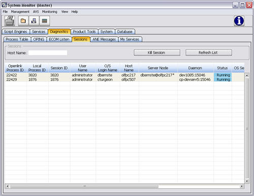

This tab shows details about sessions running on selected hosts. This window includes the functionality to terminate user sessions.
This window consists of the Sessions panel which is used to select the host name to monitor. The details are displayed in the Sessions table.
The following Security Privileges are applicable to this window:
|
Privilege ID |
Privilege |
Functionality |
|
29300 |
Access Diagnostics Tab |
Allows access to the Diagnostics monitor tabs. |
|
29330 |
Access Sessions Tab |
Allows access to the Sessions diagnostic tab. |
|
29331 |
Kill Selected Session |
Allows access to the functionality to kill a session. |
|
29306 |
Kill Remote Processes |
Allows access to the functionality to kill a remote process. |
See System Monitor
To access this window:
The following screen displays:

Other Ways to Access This Window/Screen
The module may also be launched as a service. From OpenLink Central, navigate the menu icon and select Launch Available Services. Select System Monitor from the list box.
This window contains the same menu items as the System Monitor. Menu item availability depends upon the tab being accessed.
This window contains the same toolbar buttons as the System Monitor. This tab includes the following buttons:
|
Button |
Description |
|
|
Terminates the selected session. |
|
|
Reloads the list of sessions in the table. |
This window contains the following fields:
|
Field Item |
Description |
|
Sessions |
|
|
Host Name |
A free-text entry field designed for the entry of the machine name at the O/S level. A value in this field functions as a filter of the session details shown in the table. |
|
|
|
|
Openlink Process ID |
A unique ID for each master logged into the database. |
|
Local Process ID |
A unique local machine Windows or Unix ID for the process. |
|
Session ID |
A unique ID representing the connection between the user machine and a module. |
|
User Name |
The name of the personnel accessing the selected module. |
|
O/S Login Name |
The login name of the operating system from which the process is running. |
|
Host Name |
The name of the machine from which the process is running. |
|
Server Node |
If the selected session is configured as a Server Node (in the Services Manager), this field will show the server node name. |
|
Daemon |
The host and port of the external communication daemon used by the selected session. |
|
Status |
Shows the standing of the session. A typical example would be “Running”. |
|
OS Services |
Double-click the grid icon to displays the OS Services window. This window contains installed OpenLink NT services. |
|
Process Table |
Double-click the grid icon to display the Process Table containing the details about underlying processes executed during the session. |
|
Performance |
Double-click the grid icon to display the Server Node Performance window which provides a dynamic view of a server node’s memory and CPU utilization and process information. |
|
Olisten |
Double-click the grid icon to display the Error Log & Console Viewer which tracks errors tracks errors encountered on the remote session. |
|
System Info |
Double-click the grid icon to display the tabs of the System Monitor - System Info window in one screen using tables (grid icons). This information is generated from the remote session. |
Right-clicking on any row within the table returns the following menu items:
|
Item |
Description |
|
View Process Table |
Launches the Process Table. |
|
View System Info |
Launches the System Monitor - System Info window. |
|
View Server Node Performance |
Launches the Server Node Performance window. |
|
View OS Services |
Launches the OS Services Window. |
|
View Olisten Messages |
Launches the Error Log& Console Viewer. |
To modify a table’s configuration, right-click any column header. The Column Header Menu displays.